Atlas technique du Quansheng UV-K5 V3 et UV-K1
Révision : 26-10-2026. Base de connaissances sur le matériel, les communications, le flashage et le développement pour l’UV-K5 V3 et son jumeau UV-K1. Les broches, les mémoires et les protocoles proviennent du code source ouvert qui fonctionne actuellement sur ces radios (F4HWN V3, Apache-2.0) et du démontage d’armel, et non de suppositions. Pour configurer la radio pas à pas, consultez le guide de mise en service de 0 à 100 %.
| Bloc | Composant |
|---|---|
| MCU | Puya PY32F071 (PY32F071C1BT6), Cortex-M0+ à 72 MHz, 128 KB flash, 16 KB SRAM |
| Émetteur-récepteur | Beken BK4829 |
| Radio FM | Beken BK1080 |
| Mémoire de données | Flash SPI PUYA PY25Q16HB, 2 MB |
| Écran | ST7565, 128x64 monochrome |
| Audio | Amplificateur LM4898/LN4898 |
| USB-C | Charge et programmation (port série virtuel CDC) |
Versions et identification
Le firmware d’une version ne fonctionne pas sur une autre : le microcontrôleur est différent et l’image ne démarre pas ou laisse la radio sans écran.
| Version | MCU | Mémoire de données | USB-C | Firmware ouvert de référence |
|---|---|---|---|---|
| V1 (UV-K5, K5(8), K6, 5R Plus) | DP32G030, 48 MHz, 64 KB | EEPROM I2C de 8 KB (extensible) | Charge uniquement | armel/uv-k5-firmware-custom |
| V2 | PY32F030 / PY32G030 | EEPROM I2C | Charge uniquement | muzkr/uv-k5-firmware-custom |
| V3 et UV-K1 | PY32F071, 72 MHz, 128 KB | Flash SPI PY25Q16 de 2 MB | Charge et programmation | armel/uv-k1-k5v3-firmware-custom |
- Autocollant sous la batterie : « V2 » ou « V3 ». Sans marquage, il s’agit généralement d’une V1, mais le manuel ARDF signale des étiquettes V3 sur du matériel V2 : ce n’est pas une preuve suffisante.
- USB-C apparaissant comme port série une fois connecté au PC : V3/K1.
- Version du bootloader (allumer en maintenant PTT) : l’UV-K5 V3 annonce
7.00.07; l’UV-K17.02.02ou7.03.0x. Des UV-K5(8) V3 avec7.0.11sont mentionnées dans les groupes : si vous voyez un autre numéro, vérifiez-le avant de flasher. - Les K1 et K5 V3 partagent la même carte (sérigraphie
K1-V5.0) et le même firmware. Dans la flash d’usine, seule la deuxième ligne du message de démarrage change (0x007030). - Un
.binV3 commence par sa table des vecteurs : mot 0 = pile en SRAM (0x2000xxxx), mot 1 = réinitialisation en0x0800xxxxavec le bit 0 à 1. Dans un binaire V1, l’adresse de réinitialisation est proche de0x000000xx.
Architecture
Le PY32F071 contrôle l’ensemble : il programme les registres du BK4829 à chaque changement de fréquence, de mode, de filtre ou de puissance, lit le S-meter et gère l’audio, l’écran, le clavier et la mémoire.
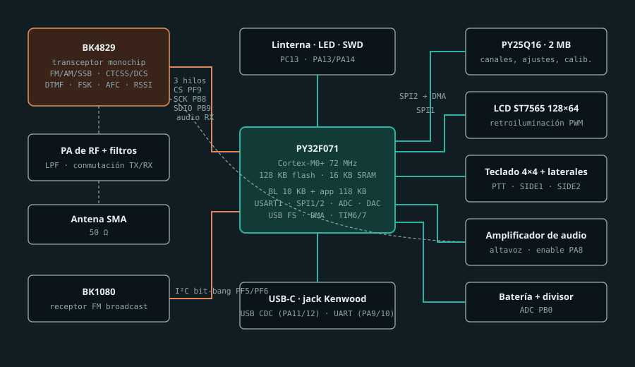
Brochage du PY32F071
Affectation utilisée par F4HWN pour V3/K1 (App/board.c, App/driver/*.c). Le numéro physique de la broche figure dans la fiche technique du PY32F071.
| Broche | Fonction | Configuration | Pilote |
|---|---|---|---|
| PA0 | Flash SPI2 SCK | AF8 SPI2 | py25q16.c |
| PA1, PA2 | Flash SPI2 MISO/MOSI | AF9 SPI2, préscaler /2, DMA1 | py25q16.c |
| PA3 | Flash SPI CS | Sortie | py25q16.c |
| PA4 | DAC vocal / capture audio RX | Analogique, TIM6 + DMA | voice.c |
| PA5 | LCD SPI1 SCK | AF0 SPI1, préscaler /64 | st7565.c |
| PA6 | LCD A0 (donnée/commande) | Sortie | st7565.c |
| PA7 | LCD SPI1 MOSI | AF0 SPI1 | st7565.c |
| PA8 | Activation de l’amplificateur audio | Sortie | gpio.h |
| PA9, PA10 | USART1 TX/RX (jack Kenwood) | AF1, 38400 bauds | uart.c |
| PA11, PA12 | USB FS D-/D+ (CDC) | USB | vcp.c |
| PA13, PA14 | SWDIO / SWCLK | SWD si ENABLE_SWD est activé à la compilation | board.c |
| PB0 | Tension de la batterie | ADC1 canal 8, 12 bits | board.c |
| PB1 | Analogique réservé | Mode analogique | board.c |
| PB2 | LCD CS | Sortie | st7565.c |
| PB3-PB6 | Clavier, colonnes | Sorties | keyboard.c |
| PB8 | BK4829 SCK | Sortie, bit-bang | bk4829.c |
| PB9 | BK4829 SDIO bidirectionnel | Sortie/entrée, bit-bang | bk4829.c |
| PB10 | PTT | Entrée pull-up, active à l’état bas | gpio.h |
| PB12-PB15 | Clavier, lignes | Entrées pull-up | keyboard.c |
| PC13 | Lampe torche | Sortie | board.c |
| PF5, PF6 | BK1080 SCL/SDA | I2C bit-bang | i2c.c |
| PF8 | Rétroéclairage LCD | PWM par TIM7 + DMA | backlight.c |
| PF9 | BK4829 CS | Sortie | bk4829.c |
Matrice du clavier
Le firmware met une colonne à l’état bas et lit les quatre lignes. La « colonne 0 » signifie qu’aucune colonne n’est active et permet de lire les touches latérales. PTT est indépendant sur PB10.
| Ligne | Col 0 | PB6 | PB5 | PB4 | PB3 |
|---|---|---|---|---|---|
| PB15 | SIDE1 | MENU | UP | DOWN | EXIT |
| PB14 | SIDE2 | 1 | 2 | 3 | * |
| PB13 | - | 4 | 5 | 6 | 0 |
| PB12 | - | 7 | 8 | 9 | F |
Bus et périphériques
| Périphérique | Bus | Remarques |
|---|---|---|
| BK4829 | 3 fils bit-bang : CS PF9, SCK PB8, SDIO PB9 | Registre de 8 bits + valeur de 16 bits. Le pilote utilise la même API que le BK4819 de la V1 (bk4819.h) |
| Flash PY25Q16 | SPI2 + DMA1, CS PA3 | Secteurs de 4 KB ; présentée comme une « EEPROM » au moyen d’une table de traduction |
| LCD ST7565 | SPI1, A0 PA6, CS PB2 | 8 pages de 128 colonnes, bit le moins significatif en haut |
| BK1080 | I2C bit-bang PF5/PF6 | Uniquement avec ENABLE_FMRADIO |
| Jack Kenwood | USART1 PA9/PA10 | 38400 8N1 |
| USB-C | USB FS PA11/PA12, CDC | Même protocole que le jack |
| Voix et audio | DAC PA4, enable PA8 | Les applications Labs utilisent PA4 comme ADC pour APRS/AFSK |
Mémoire interne
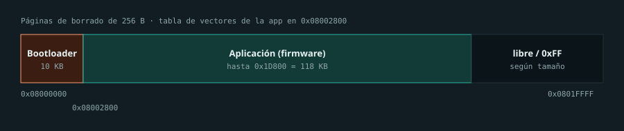
- Bootloader
0x08000000-0x080027FF(10 KB), jamais écrasé par DFU. - Application à partir de
0x08002800, maximum0x1D800octets (Core/py32f071xb.ld). - Pages d’effacement de 256 octets ; SRAM de 16 KB.
Flash externe de 2 MB
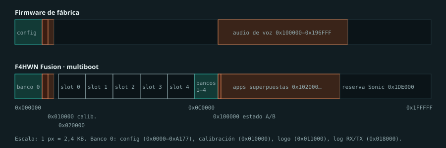
| Plage | Contenu (multiboot F4HWN) |
|---|---|
0x000000-0x00BFFF | Banque de configuration 0 : canaux, noms, VFO, paramètres |
0x010000-0x010FFF | Calibration (512 octets utiles), propre à chaque radio |
0x011000-0x011FFF | Logo de démarrage : en-tête de 8 octets + bitmap de 1024 octets (signature d’usine 0x9ABC5A5A) |
0x018000-0x01FFFF | Journal RX/TX, 8 secteurs |
0x020000 + n*0x20000 | Slots 0-4 de 128 KB : en-tête FMB1 de 64 octets (taille, CRC-32, nom, version) et image en +0x1000. Slot 0 = copie protégée du principal |
0x0C0000-0x0FFFFF | Banques de configuration 1-4 (64 KB) |
0x100000 / 0x101000 | État multiboot redondant FMP3 |
0x102000- | Applications superposées FAP1, emplacements de 8 KB |
0x1DE000-0x1FFFFF | Réserve d’interopérabilité avec Sonic |
Le firmware d’usine stocke la voix dans 0x100000-0x196FFF, la même zone que celle utilisée par F4HWN. Pour revenir au firmware d’usine, utilisez la restauration guidée d’UV Studio, qui reconstruit cette zone sans toucher à la calibration.
Carte logique EEPROM
eeprom_compat.c traduit les adresses EEPROM de 16 bits vers la flash SPI afin de réutiliser le code V1 et les pilotes CHIRP. En dehors de la table, la lecture renvoie 0xFF.
| Adresse logique | Flash physique | Contenu |
|---|---|---|
0x0000-0x3FFF | 0x000000 | Fréquences de 1024 mémoires x 16 octets |
0x4000-0x7FFF | 0x004000 | Noms de 1024 mémoires x 16 octets |
0x8000-0x886D | 0x008000 | Attributs et noms de liste |
0x9000-0x90E8 | 0x009000 | 14 VFO et Fox Hunt/Beacon |
0xA000-0xA177 | 0x00A000 | Paramètres, FM, listes, AES, spectre, F4HWN, version |
0xB000-0xB1FF | 0x010000 | Calibration |
0xC000-0xCFFF | 0x011000 | Logo de démarrage |
Voici la carte utilisée par F4HWN. Les versions d’usine, Karina, IJV ou Matoz en utilisent une autre : un pilote CHIRP ne fonctionne qu’avec le firmware pour lequel il a été écrit.
Calibration
- Chaque radio possède sa calibration dans
0x010000. Elle n’est pas interchangeable : les « calibrations de Karina » ou d’une autre unité ont été calculées pour un autre appareil. - Faites une copie avant de flasher avec UV Studio (« dump calib ») ou avec la fonction de lecture de ce site ; K5Tool-bin extrait les valeurs d’un dump. Exemples de 512 octets dans k1-teardown/openocd.
- Les commandes de F4HWN refusent d’écrire dans ce secteur.
Protocole série de programmation
Identique par le jack Kenwood et par USB-C : 38400 bauds 8N1, hérité de la V1.
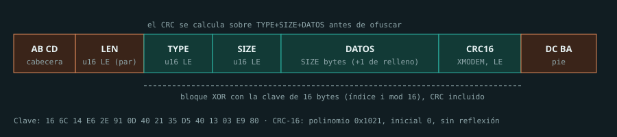
Clé d’obfuscation XOR (indice i mod 16) : 16 6C 14 E6 2E 91 0D 40 21 35 D5 40 13 03 E9 80. CRC-16 XMODEM : polynôme 0x1021, valeur initiale 0, sur le type, la taille et les données avant obfuscation. En réponse, la radio remplit le CRC avec clave[n] ^ 0xFF. Un lecteur robuste exige une en-tête, une fin et une longueur cohérentes et ne fait que consigner les CRC incorrects.
| Requête | Réponse | Utilisation | Données |
|---|---|---|---|
0x0514 | 0x0515 | Salutation et identification | u32 timestamp |
0x051B | 0x051C | Lire l’EEPROM | u16 offset, u8 size, u8 pad, u32 timestamp |
0x051D | 0x051E | Écrire l’EEPROM | u16 offset, u8 size, bool allowPassword, u32 timestamp, données |
0x0527 | 0x0528 | RSSI | - |
0x0529 | - | Tension et courant de la batterie | - |
0x052F | - | Variante de salutation | u32 timestamp |
0x05DD | - | Redémarrage | - |
0x0601 / 0x0602 | - | Registres BK4829 (uniquement ENABLE_UART_RW_BK_REGS) | registre, valeur |
Extensions F4HWN Fusion : 0x0720-0x0729 slots et banques, 0x0730-0x0737 applications superposées, 0x0738 lecture de la flash physique, 0x073A/0x073C effacement et programmation de secteur (refusent la calibration), 0x073E CRC-32 d’une plage. Le slot 0 ne peut être ni effacé ni écrasé. K5Viewer injecte des touches avec AA 55 03|04 <tecla> ; PTT est bloqué.
Bootloader et flashage
Radio éteinte, maintenez PTT puis allumez-la : la LED s’allume et l’écran reste éteint. Le bootloader d’usine écoute sur USB-C et sur le jack avec les mêmes trames.
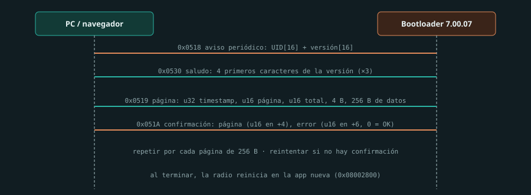
Bricohams Studio et UV Studio n’acceptent que le bootloader 7.00.07 pour l’UV-K5 V3 et 7.02.02/7.03.0x pour l’UV-K1, et valident les vecteurs du .bin avant d’ouvrir le port. Une image V1 « se flashe » mais ne démarre pas.
| Outil | Utilisation |
|---|---|
| UV Studio | Flashage, multiboot, dump de calibration, restauration d’usine |
| Bricohams Studio | Canaux, paramètres, slots et firmware principal |
| Multi-UVTools | Flasheur web multimodèle |
| Moto | Bootloader UF2 alternatif : disque USB « MOTO » et glisser-déposer du .uf2. Risqué, sans commandes série |
Les *.packed.bin sont destinés au programme de mise à jour officiel ; les .bin plats, aux outils ouverts.
SWD et récupération
Si le bootloader est endommagé, seul le SWD (PA13 SWDIO, PA14 SWCLK) avec un ST-Link reste possible. Le PY32 est traité comme un STM32F0 avec un autre ID TAP :
openocd -f interface/stlink.cfg -c "set CPUTAPID 0x0bc11477" -f target/stm32f0x.cfg -c "adapter speed 1000" -c "init; reset halt; dump_image K1_PY32F071.bin 0x08000000 0x00020000; shutdown"Ne flashez pas une image complète de la flash externe avec un programmateur : vous effaceriez la calibration. Les images « Factory_Reconstructed » de k1-teardown sont destinées à la restauration guidée d’UV Studio.
Compilation du firmware
Base recommandée : armel/uv-k1-k5v3-firmware-custom, qui prend déjà en charge le démarrage PY32, la HAL Puya, la flash SPI, le BK4829, l’USB et le protocole.
git clone --depth 1 https://github.com/armel/uv-k1-k5v3-firmware-custom
cd uv-k1-k5v3-firmware-custom
./compile-firmware.sh Fusion
./compile-firmware.sh Fusion -DENABLE_VOX=OFF
./compile-firmware.sh AllLe conteneur utilise ARM GNU Toolchain 13.3.rel1, CMake et Ninja. Préréglages : Custom, Fusion, FieldOps, Transfer, Labs et Max. Résultat dans build/<Preset>.
| Chemin | Contenu |
|---|---|
App/driver/ | bk4829.c, py25q16.c, st7565.c, keyboard.c, uart.c, vcp.c, eeprom_compat.c, mb_flash.c |
App/app/ | spectrum.c, scanner.c, menu.c, uart.c, fm.c, aircopy.c, foxhunt.c |
Core/py32f071xb.ld | Édition de liens en 0x08002800, 118 KB |
CMakePresets.json | Options ENABLE_* par édition |
La compilation reproductible de Bricohams est documentée dans Bricohams V3 et chaque option dans les options F4HWN. Avant de flasher une compilation personnalisée, vérifiez les vecteurs et assurez-vous qu’elle ne dépasse pas 0x1D800 octets.
Modifications matérielles
La matrice de validation intégrale détaille les critères de compatibilité, les tests, les limites et les éléments de preuve encore attendus. Il n’existe pas de certification générale des modifications V1 sur V3. Le diagramme Android/CAT/mémoires est fonctionnel : ce n’est ni un schéma électrique mesuré ni un guide de soudage.
| Modification | V3/K1 | Remarques |
|---|---|---|
| Extension EEPROM (M24M02, 24C512) | Non applicable directement | La V3 utilise une Flash SPI de 2 MB, et non une EEPROM I2C interchangeable. Référence V1 : losehu |
| Récepteur HF SI4732 (cartes v5/v6.8) | Non vérifié sur V3 | Les références répertoriées ici concernent la V1 (CEC HF, Reborn, losehu, Robzyl 512K) ; elles ne démontrent pas la prise en charge du PY32 |
| Antenne SMA (17 cm, 38 cm) | Accessoire sous conditions | Vérifiez le connecteur, les contraintes mécaniques, la bande et le ROS ; la longueur ou une amélioration RX ne certifie pas l’émission |
| Modification satellite (bobines, LNA) | Non confirmée | Aucun schéma ni aucune mesure d’une adaptation à cette révision V3 n’est disponible |
| Filtre passe-bas TX | À examiner | Nannk/quansheng-lpf-mod ; vérifiez la carte mesurée |
| Modification 27 MHz | Référence V1, non validée sur V3 | Wiki ; nécessite un réseau RF et des mesures propres, ne transposez pas les valeurs |
| Câble de programmation | USB-C direct | Le câble série USB Kenwood (USART1) convient également |
| Coprocesseur ou ESP32 | Conçus pour la V1 | ESPRI, UVK5-Coprocessor, UVE5 |
Les firmwares qui augmentent la puissance de sortie au-delà de 5 W peuvent griller l’étage final. Émettre en dehors des bandes autorisées par votre licence est illégal, même si le firmware le permet.
Schémas et images
Les sources consultées pour cette révision ne permettent pas d’identifier un schéma électrique complet et vérifié de la V3/K1. Cela ne prouve pas qu’il n’en existe pas d’autre. Les références disponibles sont :
- Démontage du K1 par armel (Apache-2.0) : photos haute résolution, dumps, firmware annoté et fiches techniques.
- Photos de la carte UV-K1 dans le wiki.
- Schéma V1 par rétro-ingénierie sous KiCad : CPU, RX, TX, audio, chargeur et BK1080. Feuilles RX, TX et BOM interactive. Aucune licence déclarée : seul un lien est fourni.
- Fiches techniques : BK4829, PY32F071, PY25Q16HB, BK1080, registres BK4819.
Photos du démontage de l’UV-K1 (même carte que le K5 V3). Auteur : F4HWN (armel), armel/k1-teardown, licence Apache-2.0 ; réduites à 1600 px.
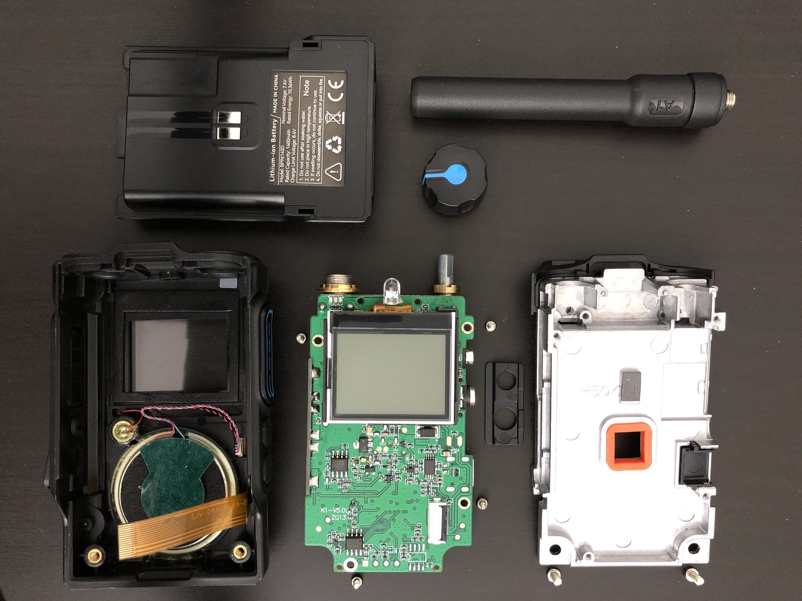
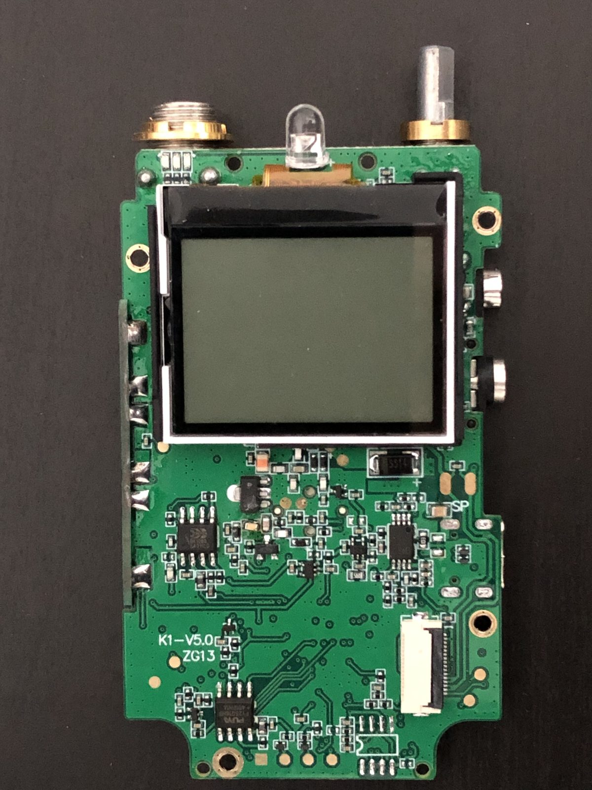
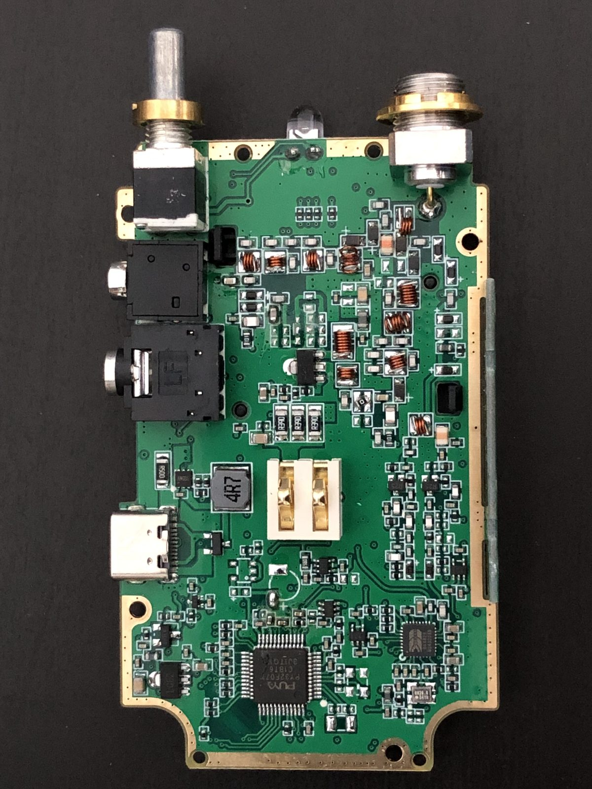
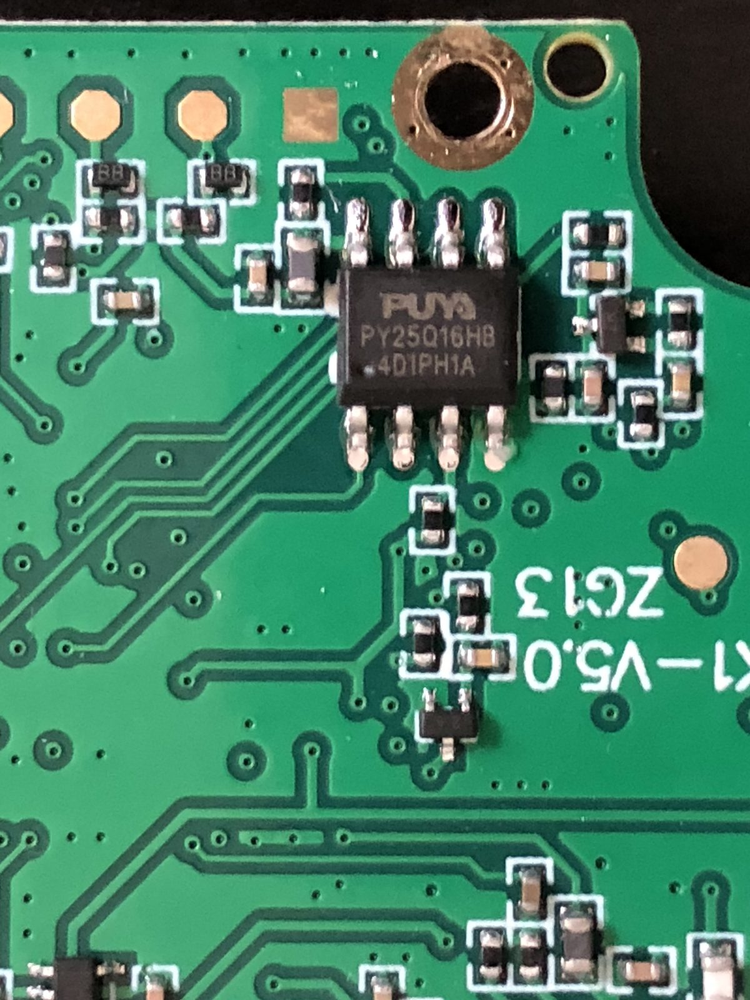
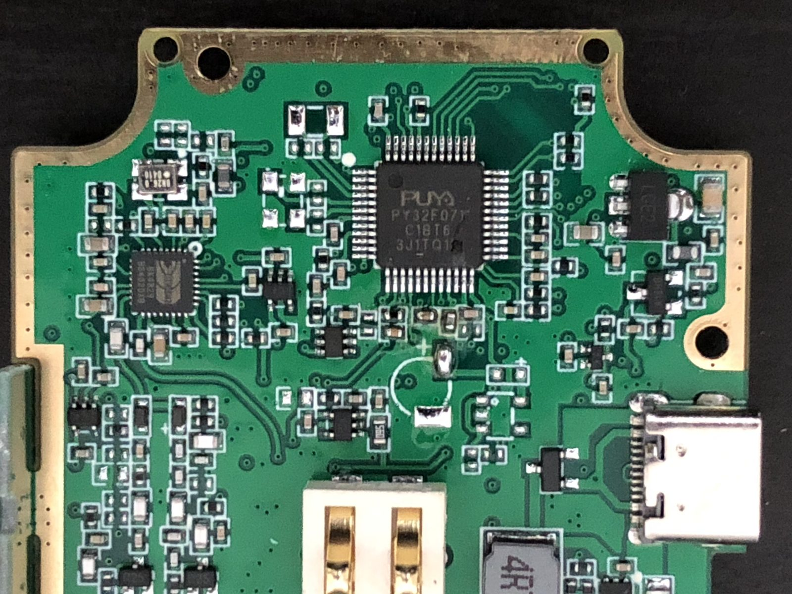
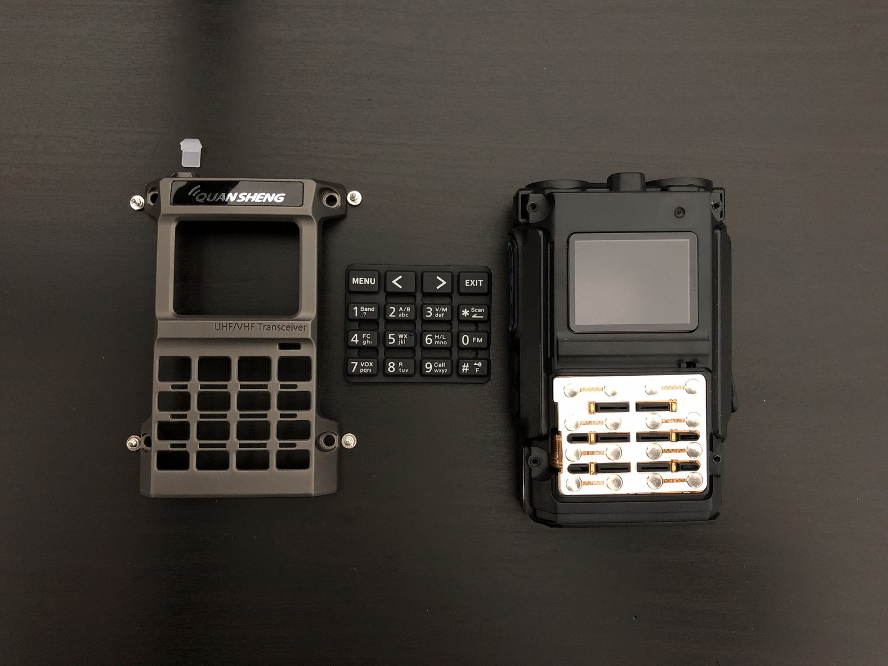
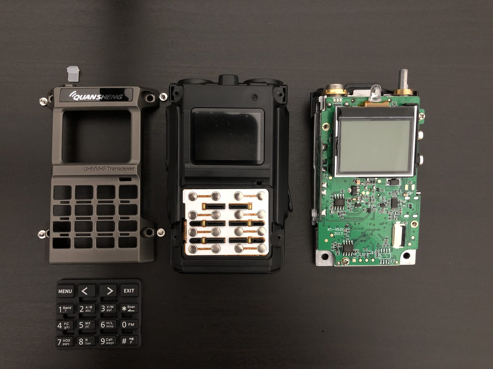
Firmwares et dépôts pour V3/K1
Vérifiés avec l’API GitHub le 26-10-2026 ; « V3/K1 » = l’arbre contient du code PY32.
| Dépôt | Licence | Dernier push | Description |
|---|---|---|---|
| armel/uv-k1-k5v3-firmware-custom | Apache-2.0 | 2026-10-25 | F4HWN Fusion PY32, base de référence |
| Robby69400/Sonic | Apache-2.0 | 2026-10-25 | Successeur de Robzyl, fork de F4HWN avec multiboot |
| Gogu-Qs/GOGUFW-UV-K1-Messenger | Apache-2.0 | 2026-10-24 | Messagerie, ACK, portée |
| N7SIX/UV-K1Series_ApeX-Edition_v7.6.0 | Apache-2.0 | 2026-10-11 | Édition ApeX |
| reald/uv-k1-k5v3-firmware-custom | Apache-2.0 | 2026-10-19 | ARDF, voir le guide ARDF |
| fagci/k1-fw | Sans licence | 2026-07-19 | Firmware de fagci pour K1/K5 V3 |
| muzkr/moto | Apache-2.0 | 2025-12-31 | Bootloader UF2 |
| armel/k1-teardown | Apache-2.0 | 2026-09-28 | Photos, dumps et fiches techniques |
| EthanYan6/uv-k1-k5v3-firmware-custom-3ch | Apache-2.0 | 2026-08-10 | Écoute sur 3 canaux |
| qbs524/uv-k1-k5v3-firmware-custom-main-chn | Apache-2.0 | 2025-12-24 | F4HWN en chinois |
| qrp73/K5TOOL | GPL-3.0 | 2025-12-18 | EEPROM et flashage en ligne de commande |
| knoinok/quansheng_toolkit | - | 2026-05-08 | Toolkit de bureau K1/K5 V3 |
| Dim0s/quansheng-UV-K5v3-K1-firmware-pack | - | 2026-10-25 | Collection de binaires V3/K1, voir le pack Dim0s |
Liens morts et emplacements où les trouver encore :
Robby69400/Robzyl*: supprimés ; copies sur K5Quan/Robzyl_K1_, K5Quan/Robzyl_512K et simoncottingham/Robzyl_K5 ; l’auteur continue avec Sonic.joaquimorg/uv-k5etnew_ui: renommés en UV-KX, UV-KX-firmware et uv-kx-tools (V1).armel/uvtools2: désormais Robby69400/uvtools2 ; le site reste disponible à https://armel.github.io/uvtools2/.bg6ud/uv-k1-k5v3-firmware-custom: supprimé ; voir les forks de F4HWN V3.
Aucun projet Quansheng n’a été trouvé sur GitFlic, GitVerse, GitLab et Gitee ; la communauté russe publie des binaires sur 4PDA et Telegram.
Karina et code fermé
Karina est un logiciel fermé (voir Karina). Selon les groupes russes, il s’agit de la suite de fagci-mod v1.2.1 (Apache-2.0, qui autorise les dérivés fermés). Pour reproduire ses fonctions proprement : les décrire à partir du manuel et du changelog, partir de F4HWN V3 et du code du spectre de fagci-mod et de PUNKTRACKER 2.5 (Apache-2.0, V1). fagci/s0v4, hawk5 et k1-fw n’ont pas de licence : ils peuvent être consultés, mais pas copiés. Ne décompilez pas le binaire de Karina pour en reconstruire le code source.
Sources
- Code : F4HWN V3 (
App/board.c,App/driver/*,App/app/uart.c,mb_flash.h,eeprom_compat.c), moto, Bricohams Studio (bkFlashMain). - Matériel : k1-teardown, Quansheng UV-K5 Wiki.
- Communauté : recherches ciblées dans des groupes Telegram en espagnol et en russe, sans auteurs ni données personnelles ; pack Dim0s.
- Références V1 : amnemonic, losehu, wiki d’egzumer.